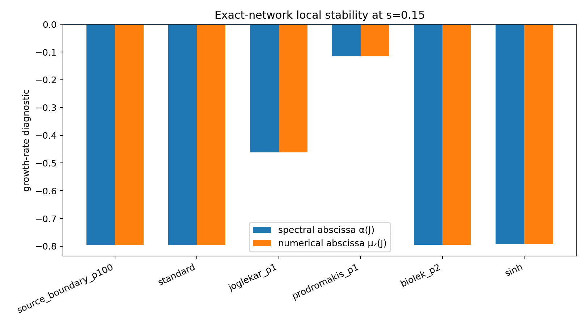
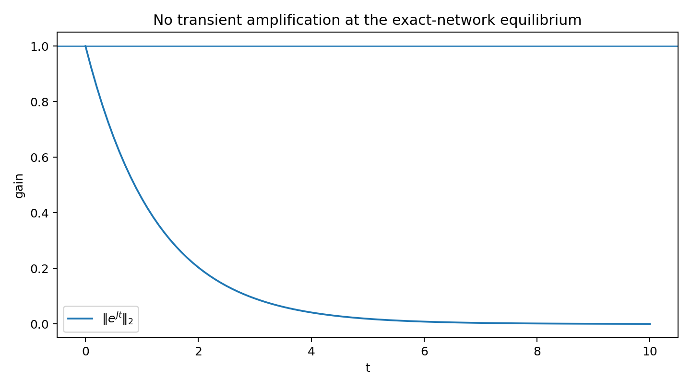
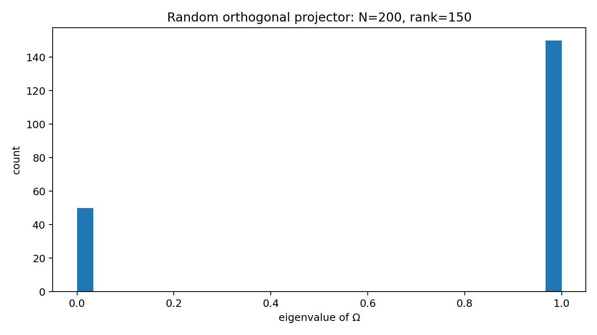

Trajectory-dependent pseudospectral stability in self-organizing memristive networks
1. Research question
The central question is deliberately narrower than the broad claim that “non-normality causes learning”:
This separates two mechanisms that are often conflated. For a fixed equilibrium, one studies \(e^{J(x^*)t}\). Along a nonlinear escape trajectory, the tangent dynamics is instead
Because \(J(x(t_1))\) and \(J(x(t_2))\) need not commute, the finite-time propagator contains information that cannot be recovered from the spectrum of a single frozen matrix.
2. Source model
The network equation is
The source paper interprets \(\Omega\) as the orthogonal projection associated with the cycle space of the circuit graph and, for the numerical work, replaces a specific circuit topology by a random projector. The main-paper Materials and Methods state \(N=200\), \(\alpha=\beta=1\), \(\chi=0.9\), and \(\operatorname{rank}(\Omega)=N-M=150\) for \(M=50\). Supplementary Material D separately specifies an \(N=200\), \(N_c=100\) ensemble for its basin experiment. Both settings are retained explicitly in the code.
3. Exact analytic Jacobian
Define
Using \(dA^{-1}=-A^{-1}(dA)A^{-1}\) gives
Hence the exact Jacobian used in production is
The boundary-window model uses the full product rule, including the derivative of the smooth \(p=100\) window. The Biolek, Prodromakis and Joglekar models likewise use analytic derivatives. Finite differences appear only in unit tests to validate the formulas.
4. Local pseudospectral calculation
At each numerically located equilibrium we calculate:
- spectral abscissa \(\alpha(J)=\max\Re\lambda(J)\),
- numerical abscissa \(\mu_2(J)=\lambda_{\max}((J+J^T)/2)\),
- the maximum sampled gain \(\max_t\|e^{Jt}\|_2\), and
- a grid approximation to the 2-norm Kreiss quantity \(\sup_{\Re z>0}\Re z\|(zI-J)^{-1}\|_2\).
The last quantity is explicitly labelled a grid diagnostic. It is not presented as a rigorous supremum and is not numerically identified with the source paper's reported value without matching its norm, grid and drive realization.

| Model | α(J) | μ₂(J) | max ‖eJt‖₂ |
|---|---|---|---|
| standard | -0.7960 | -0.7960 | 1.000 |
| source boundary p=100 | -0.7960 | -0.7960 | 1.000 |
| Joglekar p=1 | -0.4616 | -0.4616 | 1.000 |
| Prodromakis p=1 | -0.1154 | -0.1154 | 1.000 |
| Biolek p=2 | -0.7950 | -0.7950 | 1.000 |
| sinh current | -0.7918 | -0.7918 | 1.000 |


5. What this does—and does not—show
The exact-network calculation supports the local statement that, for the tested low-drive equilibrium, the instability mechanism is not ordinary Euclidean transient growth of a stable frozen Jacobian. That is consistent with the conceptual distinction emphasized in the source Supplementary Material.
It does not establish that non-normality is irrelevant everywhere in the nonlinear dynamics. A trajectory can move through a sequence of Jacobians, each with its own eigenvectors and pseudospectrum. The appropriate object for that question is the singular-value structure of \(\Phi(t,t_0)\), together with time-dependent spectral quantities and commutator measures such as
The repository is structured so that this trajectory-level analysis can be added without changing the exact network or Jacobian implementation.
6. More physical component models
The Supplementary Material reports that the tunnelling phenomenology survives three commonly used window functions and a nonlinear current generalization. This project implements those same functional forms:
- Biolek: \(W_p(x,I)=1-(x-\theta(-I))^{2p}\), with \(p=2\);
- Prodromakis: \(W_p(x)=1-[(x-0.5)^2+0.75]^p\), with \(p=1\);
- Joglekar: \(W_p(x)=1-(2x-1)^{2p}\), with \(p=1\);
- nonlinear current: \(\dot x=T^{-1}\sinh[I/(i_cR_{off})]-\alpha x\), with the source's representative parameters \(i_c=\alpha=T=R_{off}=1\).
At the stable equilibrium tested here, none of these changes produces positive numerical abscissa or a sampled Euclidean transient gain above unity. The more interesting question is therefore trajectory-dependent finite-time amplification near the rumbling/escape regime.
7. Reproducibility
python -m pip install -e .
pytest -q
python scripts/run_exact.py
cat results/exact/local_exact_summary.csvAll numerical artifacts used for the figures are stored under results/exact/. GitHub Actions reruns the calculation on pushes and uploads the resulting data as an artifact.
8. Proposed next experiment
The most discriminating follow-up is a trajectory-conditioned stability atlas:
- sample source-aligned networks and source-aligned initial conditions;
- integrate the nonlinear trajectory with a convergence-controlled solver;
- evaluate the analytic Jacobian at every step;
- propagate \(\Phi\) or an orthonormal tangent basis;
- record finite-time singular-value growth, local Lyapunov rates, numerical abscissa and commutator norms;
- compare trajectories that remain in the metastable basin with trajectories that escape; and
- repeat the analysis under physical heterogeneity in \(\alpha_i,\beta_i,i_{c,i}\) and under alternative graph-derived projectors.
This turns the original local question into a testable distinction between frozen non-normal transient growth and non-autonomous cooperative instability.
9. Relation to the source literature
The repository is based on the model and Supplementary Material of Caravelli, Sheldon & Traversa, Global minimization via classical tunneling assisted by collective force field formation, Science Advances 7, eabh1542 (2021). The authors' work reports transiently unstable “rumbling” trajectories and specifically analyzes local Jacobian non-normality without finding sufficient amplification to explain the escape. This project treats that result as the starting point rather than attempting to reinterpret it.
The broader 2026 perspective by Caravelli et al. places self-organizing memristive networks in the context of physical learning systems and emphasizes their collective nonlinear dynamics.